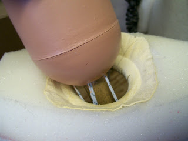

Stiff Neck
3/31/2010
{kind=link}

Comments: About 8 or 9 years or so ago I had purchased a professional figure from Maher Studios. It sold under the name, "Pleasant Dale". I have not really used it much since then, as I use other figures a lot more. But I got it out this week to try to develop a character with it and was reminded of a problem I had with it at the beginning. The problem is this: the neck hole of the body has a red plastic ring around the inside of the hole through which the head stick goes. The neck, when turned, rubs against this red ring which is cutting into the neck. There is some friction as the neck turns because of this ring. I can lift the head a little to relieve the stress against the red ring, but it gets a bit heavy. It is somewhat minor at this point, but will, I fear, continue to get worse with use. We have put clear packing tape around the base of the neck where it joins the head stick thinking this would protect it from being rubbed worse. I can't help but think, however, that the neck should be able to turn more easily and not have the rubbing against the ring.
* * * * *
Simple solution: I have been lining all the torso neck openings with chamois leather (purchased in the automotive department at Target). I glue the leather in place with hot glue (see photo) and then wax the leather by rubbing it with paraffin wax (purchased in the canning department at the supermarket). This makes the turning of the head smoother and cuts down on both noise and friction. As a side note: I prefer to unhook the loop on the end of the head post when actually using the figure. This relieves some of the stress against the neck socket and allows more freedom of manipulation.